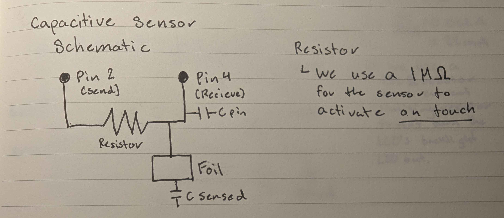
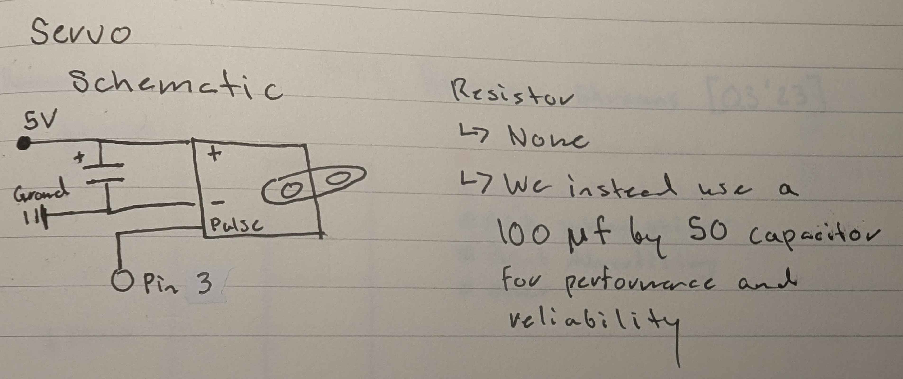
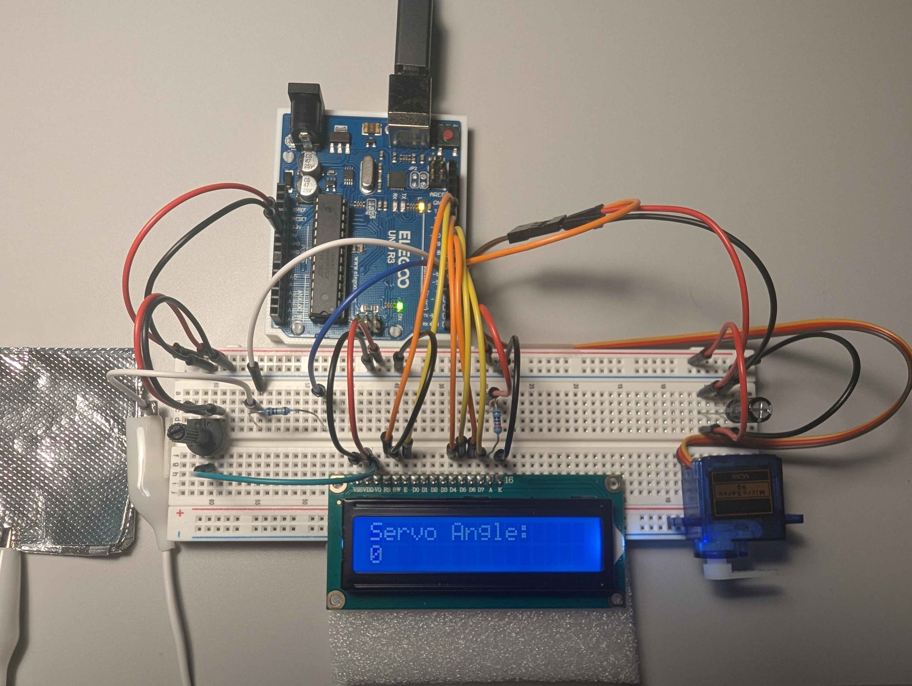
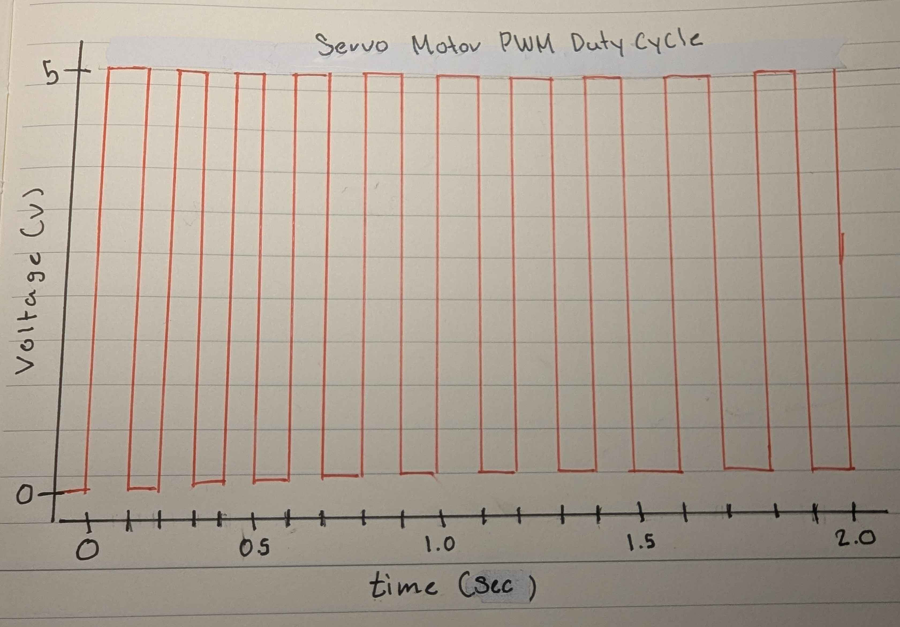

Schematics

The capacitive sensor uses a 1 mega-ohm resistor, allowing for the
circuit to respond when touched. By touching the aluminum foil,
the capacitance changes, triggering a response in the circuit.
Higher resistance values could be used to detect proximity
instead of direct contact.

Text for the schematic
Code Structure
/*
Octavio Badillo
2/18/2025
A program that reads input from a capacitive sensor and controls an LED strip
through a transistor. If the sensor value exceeds a set threshold the LED strip turns on,
and vice versa.
*/
// Libraries
#include
// Ojbects
CapacitiveSensor cs_2_4 = CapacitiveSensor(2, 4); // Capacitive sensor object (Send Pin 2, Receive Pin 4)
// Variables
int transistorLEDS = 3; // Pin connected to transistor controlling LED strip
int sensorThreshold = 800; // Threshold for capacitive sensor comparison
// Initializes serial communication and setups the transistor pin
void setup() {
Serial.begin(9600);
pinMode(transistorLEDS, OUTPUT);
}
// Continuously reads the capacitive sensors value and controls the LED strip
void loop() {
long sensorVal = cs_2_4.capacitiveSensor(30); // Reads capacitive sensor value
// Compares sensor value to threshold and controls the LED strip accordingly
if(sensorVal > sensorThreshold) {
analogWrite(transistorLEDS, 255); // Turn LED strip ON
} else {
analogWrite(transistorLEDS, 0); // Turn LED strip OFF
}
}
The Higher Voltage Circuit
Higher Voltage Circuit in Action!

Q1: What is the absolute maximum amount of current between pins 2 and 3? (N-Mosfet Transistor Datasheet)
From the datasheet we find that the absolute maximum amount of current between pins 2 and 3 can be 37.2 A
Q2: Draw a schematic for a circuit with using at least your arduino, a DC motor, a flyback diode, and capacitors between power and ground. Find parts with datasheets you could use for each of these schematic components.

Text
Q3: Draw a schematic using at least your arduino, this chip, and two motors. Write (pseudo) code that shows how you would move the motors both forward, both back, then one forward one back, and one back then forward. (L293D Chip Datasheet)
// Q3 Pseudo Code